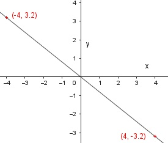

Sie sehen ein gelbes Eingabefeld und die Schalter: Prüfen und Lösung.
Tragen Sie Ihr Ergebnis ein, prüfen Sie es oder starten Sie eine Lösung.
Ergänzen Sie die Wertetabellen für die Graphen der Funktionen:
Aufgabe 1
y = 2x x -2 2
y 4
Aufgabe 2
y = -3x x -2 2
y 6
Aufgabe 3
y = 0,4x x -4 4
y 1.6
Aufgabe 4
y = - 0,8x x -1 4
y 0,8
Aufgabe 5
Ein Flugzeug verbraucht auf 200 km 1800 l Kerosin.
a) Wie lautet die Funktionsgleichung, die den Verbrauch V
abhängig von der Strecke s beschreibt?
b) Wie lautet die Funktionsgleichung, die die Strecke s
abhängig vom Verbrauch V beschreibt?
c) Ergänzen Sie die Wertetabelle für den Graphen der Funktion V
abhängig von s.:
s in km 0 200
V in l 1800
d) Welche Strecke hat das Flugzeug nach einem Verbrauch von 10 000 l zurückgelegt?
e) Wie viel l Kerosin verbraucht es für eine Strecke von 6 000 km?
Aufgabe 6
y = 0,5x + 4 x -2 4
y 6
Aufgabe 7
y = -4x + 60 x -4 10
y 76
Aufgabe 8
y = x - 2 x -3 3
y 1
Aufgabe 9
Die Gerade zeigt die Abhängigkeit der Kosten y für einen
Leihwagen von der gefahrenen Strecke x.
Bestimmen Sie die Funktionsgleichung der Geraden.

y = 0,25x +
Bestimmen Sie die Steigung m der Geraden, die durch folgende Punkte geht:
Aufgabe 10
A(2|1); B(6|9)
Aufgabe 11
A(-1|-2); B(5|5) m = -----
6
Aufgabe 12
A(6|0); B(3|-3)
Aufgabe 13
A(-2|5); B(8|-7) m =
Bestimmen Sie die Steigung m der Geraden und den Abschnitt b auf der y-Achse:
Aufgabe 14
y = 2x + 1
Aufgabe 15
y = -0,5x + 7 m =
Aufgabe 16
y = -x - 1
Aufgabe 17
y = 2x m =
Ermitteln Sie die Funktionsgleichung der dargestellten Geraden:
Aufgabe 18
Aufgabe 19
y = -2x +
Aufgabe 20
Drei gleich große Gefäße werden mit Wasser gefüllt.
Zu Beginn ist Gefäß A leer, im Gefäß B stehen 0,1 l und im Gefäß C stehen 0,5 l Wasser.
Die Füllgeschwindigkeit beträgt 50 ml/s.
Ermitteln Sie die Abhängigkeit der Füllmenge M in l von der Füllzeit s für die 3 Gefäße.
Ergänzen Sie die Wertetabellen.
Aufgabe 21
Gefäß A: M = 0,05s s 0 10
M 0,5
Aufgabe 22
Gefäß B:
Aufgabe 23
Gefäß C: M = + 0,5
Ermitteln Sie die Gleichung der Geraden, wenn gegeben ist:
Aufgabe 24
P(3|5); b = 2
Aufgabe 25
P(2|5); b = -1 y = x - 1
Aufgabe 26
P(2|-2); b = -4
Aufgabe 27
P(2|1); m = 4 y = x - 7
Aufgabe 28
P((5|7); m = -3
Aufgabe 29
P(6|-4); m = -0,5 y = x - 1
Aufgabe 30
Die Talstation einer Seilbahn liegt in einer Höhe von 550 m.
Die erste Stütze steht in einer Höhe von 820 m und ist 300 m von der Talstation entfernt.
Die Bergstation ist 700 m von der Talstation entfernt.
a) Welche Steigung hat die Bahn?
b) Ergänzen Sie die Wertetabelle für den.
Graphen von h in Abhängigkeit von l. Abstand l in m 100 400
Höhe h in m 640 910
c) Auf welcher Höhe liegt die Bergstation?
Aufgabe 31
Ein gleichmäßig ansteigendes Flugzeug befindet sich 1 200 m nach dem Start
auf einer Höhe von 460 m. 4,5 km nach dem Start auf einer Höhe von 955 m.
a) Berechnen Sie, wie schnell das Flugzeug steigt.
b) In welcher Höhe liegt die Startbahn? Auf einer Höhe von m.
Aufgabe 32
4 Werkstätten haben folgende Tarife für einen Ölwechsel:
Werkstatt A: Preis/Liter Öl 7 €; Arbeitspauschale 6 €
Werkstatt B: Preis/Liter Öl 4,50 €; Arbeitspauschale 8 €
Werkstatt C: Preis/Liter Öl 6 €, Arbeitspauschale 9 €
Werkstatt D: Preis/Liter Öl 9 €, Arbeitspauschale 5 €
a) Wie lautet die Funktionsgleichung für die Kosten K abhängig von
der Ölmenge M für die Werkstatt C?
b) Welche Werkstatt verlangt 32 € für den Ölwechsel,
wenn die Ölmenge 3 l beträgt?
Aufgabe 33
Eine Motorpumpe hat einen 20 l Tank. Im Betrieb verbraucht sie 2,5 l/Stunde.
a) Welcher Graph zeigt diesen Sachverhalt?
b) Wie lautet seine Funktionsgleichung für die Abhängigkeit des Tankinhalts I
von der Betriebsdauer t?
c) Nach wie viel Stunden sind noch 4 l im Tank? Nach h
Wie lauten die Funktionsgleichungen der dargestellten Geraden?
Aufgabe 34
Aufgabe 35
>
y = x + 1
Aufgabe 36
Aufgabe 37
>
y = x - 0,5
Aufgabe 38
Die Gerade A hat eine Steigung von 2, die Gerade B eine von -2,5.
Die beiden Geraden schneiden sich im Punkt (3|-2).
Wie lauten die Funktionsgleichungen der beiden Geraden?
Aufgabe 39
Eine Kerze ist nach einer Brennzeit von einer Stunde von 18 cm auf 16 cm abgebrannt.
a) Wie lautet die Funktionsgleichung für die Abhängigkeit der Kerzenlänge l von der Brennzeit t?
b) Wie lang ist die Kerze nach einer Brennzeit von 3,5 Stunden?
c) Wie viel Stunden hat die Kerze gebrannt, wenn sie noch 4 cm lang ist?
Sie hat Stunden gebrannt.
 Die Talstation einer Seilbahn liegt in einer Höhe von 550 m.
Die erste Stütze steht in einer Höhe von 820 m und ist 300 m von der Talstation entfernt.
Die Bergstation ist 700 m von der Talstation entfernt.
a) Welche Steigung hat die Bahn?
b) Ergänzen Sie die Wertetabelle für den.
Graphen von h in Abhängigkeit von l. Abstand l in m 100 400
Höhe h in m 640 910
c) Auf welcher Höhe liegt die Bergstation?
Die Talstation einer Seilbahn liegt in einer Höhe von 550 m.
Die erste Stütze steht in einer Höhe von 820 m und ist 300 m von der Talstation entfernt.
Die Bergstation ist 700 m von der Talstation entfernt.
a) Welche Steigung hat die Bahn?
b) Ergänzen Sie die Wertetabelle für den.
Graphen von h in Abhängigkeit von l. Abstand l in m 100 400
Höhe h in m 640 910
c) Auf welcher Höhe liegt die Bergstation?  Ein gleichmäßig ansteigendes Flugzeug befindet sich 1 200 m nach dem Start
auf einer Höhe von 460 m. 4,5 km nach dem Start auf einer Höhe von 955 m.
a) Berechnen Sie, wie schnell das Flugzeug steigt.
b) In welcher Höhe liegt die Startbahn? Auf einer Höhe von m.
Ein gleichmäßig ansteigendes Flugzeug befindet sich 1 200 m nach dem Start
auf einer Höhe von 460 m. 4,5 km nach dem Start auf einer Höhe von 955 m.
a) Berechnen Sie, wie schnell das Flugzeug steigt.
b) In welcher Höhe liegt die Startbahn? Auf einer Höhe von m.
 Eine Motorpumpe hat einen 20 l Tank. Im Betrieb verbraucht sie 2,5 l/Stunde.
a) Welcher Graph zeigt diesen Sachverhalt?
b) Wie lautet seine Funktionsgleichung für die Abhängigkeit des Tankinhalts I
von der Betriebsdauer t?
c) Nach wie viel Stunden sind noch 4 l im Tank? Nach h
Eine Motorpumpe hat einen 20 l Tank. Im Betrieb verbraucht sie 2,5 l/Stunde.
a) Welcher Graph zeigt diesen Sachverhalt?
b) Wie lautet seine Funktionsgleichung für die Abhängigkeit des Tankinhalts I
von der Betriebsdauer t?
c) Nach wie viel Stunden sind noch 4 l im Tank? Nach h  >
y = x + 1
>
y = x + 1  >
y = x - 0,5
>
y = x - 0,5